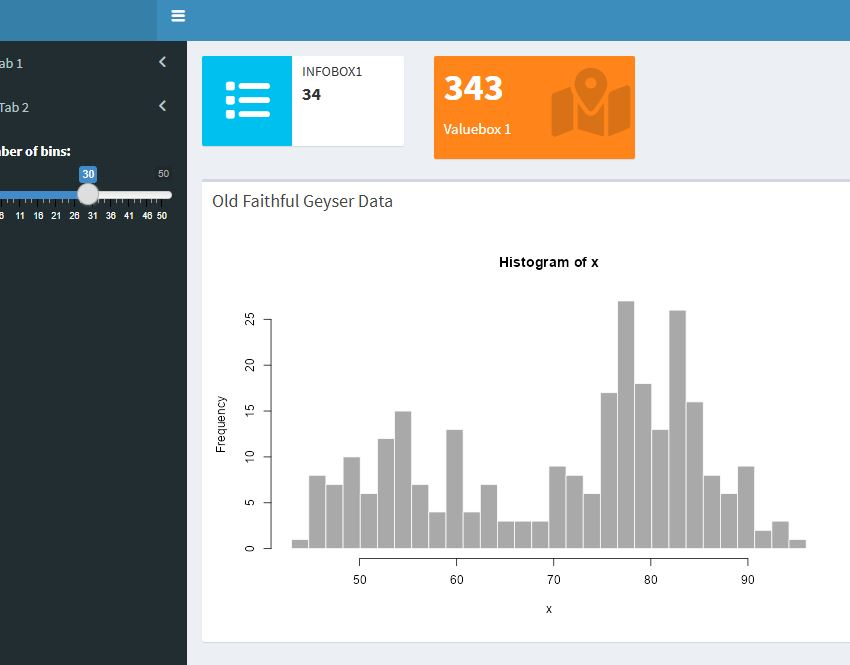

This vignette provides an overview of the templates available in the
rbranding package. Use the get_template()
function to install the template of your choice by specifying the
template_name argument.
Quarto Templates
quarto_website: Simple Quarto Website Template
get_template("quarto_website")Provides a basic structure for a Quarto website with multiple pages, navigation, and branding support.
quarto_ggplot2: Quarto Report with Branded
ggplot2 Figures

get_template("quarto_ggplot2")Provides a Quarto report setup that integrates
_brand.yml and ggplot2 for creating branded
visualizations.
Shiny App Templates
shiny_basic: Simple Histogram Visualization Shiny
App
get_template("shiny_basic")
shiny::runApp(".")Provides a simple Shiny app that allows users to interactively adjust parameters and see the results in a histogram.
shiny_kmeans: Simple K-means Clustering Visualization
Shiny App

get_template("shiny_kmeans")
shiny::runApp(".")Provides a simple Shiny app that demonstrates K-means clustering with interactive controls for the number of clusters and points. Based on this example
shiny_complex: Complex Histogram Visualization Shiny
App

get_template("shiny_complex")
shiny::shinyAppFile("app.r")Provides a more complex Shiny app with multiple tabs, allowing users to interactively adjust parameters and view results in different formats.
shiny_wastewater: Wasterwater Data Visualization Shiny
App
get_template("shiny_wastewater")
shiny::runApp(".")Provides a Shiny app template for visualizing wastewater data,
including interactive plots and data tables. This example demonstrates
how to integrate branding with the linkeR
package.
Other Templates
rmarkdown: R Markdown Template for PDF or HTML
Reports
get_template("rmarkdown")Provides a basic R Markdown document setup that integrates
_brand.yml for consistent branding in your reports.